K562 Activating DNase matched - State 12:CtcfO (n=79)
K562 Activating DNase matched - State 12:CtcfO (n=79)
[
See group descriptions
]
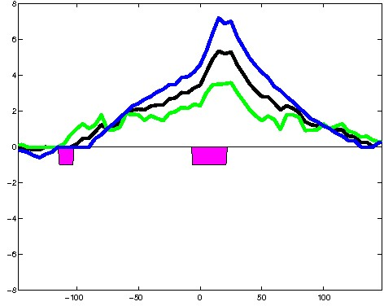
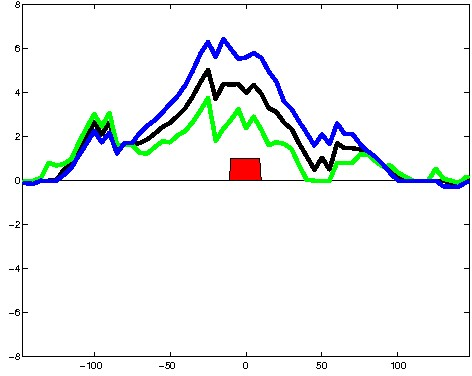
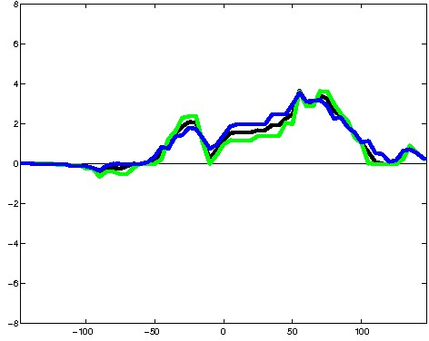
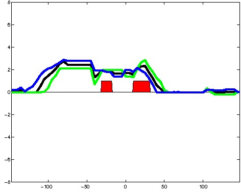
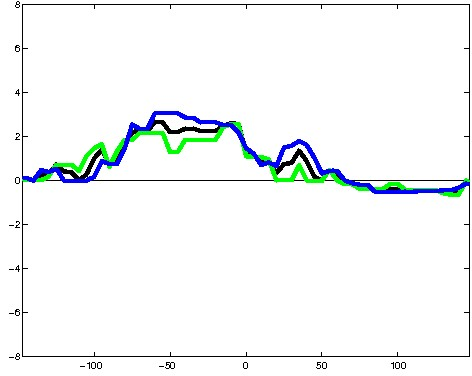
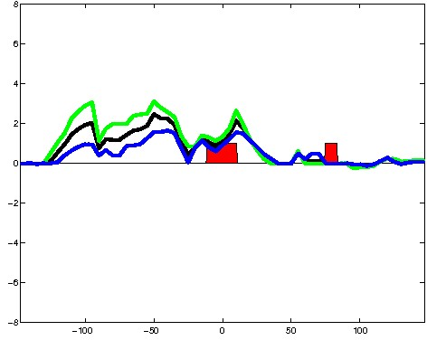
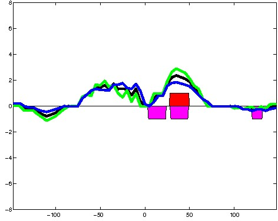
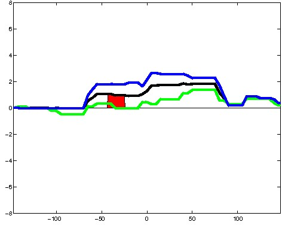
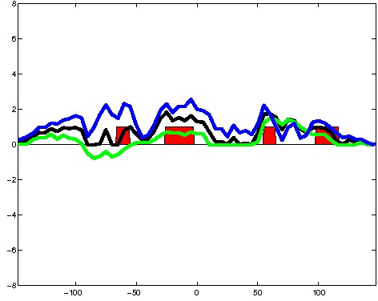
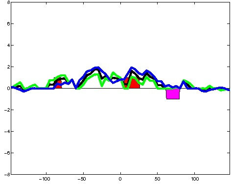
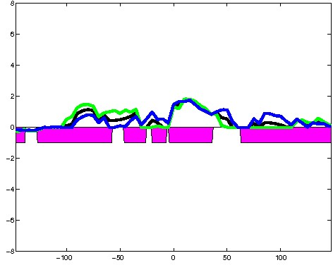
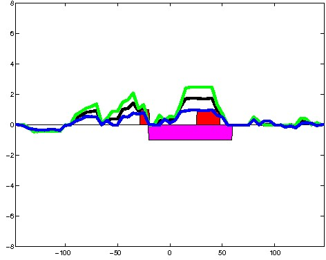
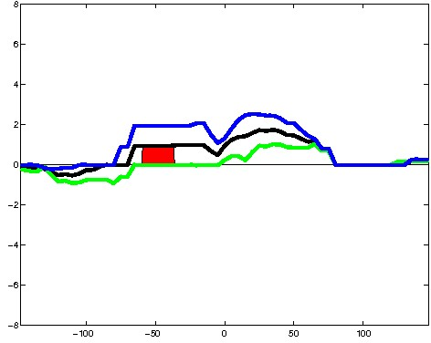
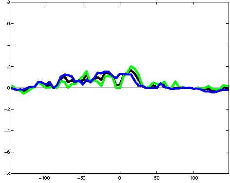
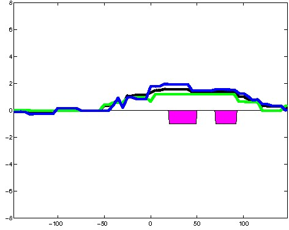
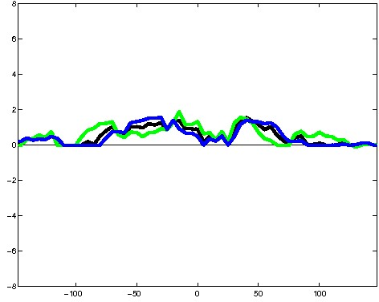
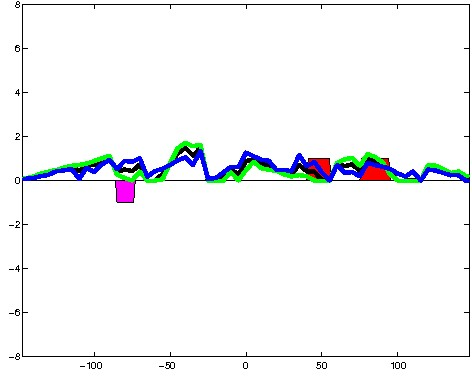
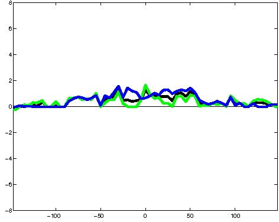
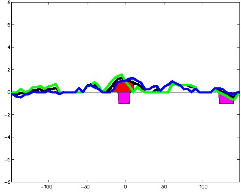
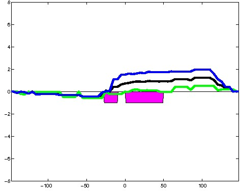
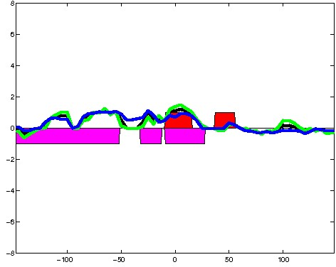
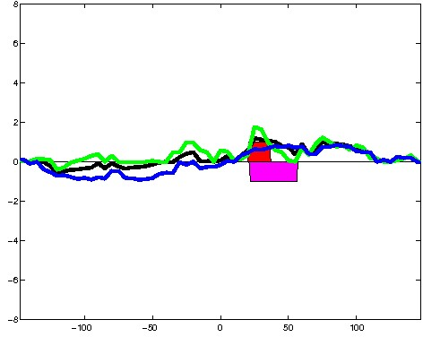
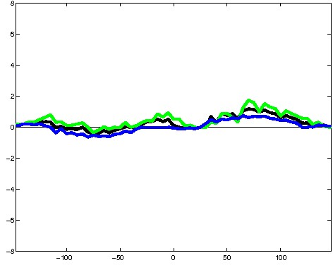
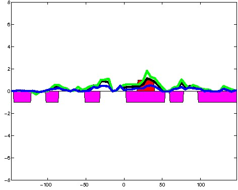
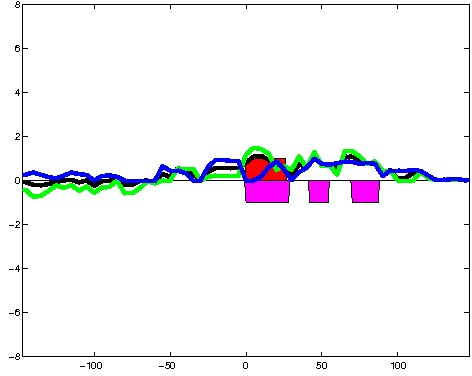
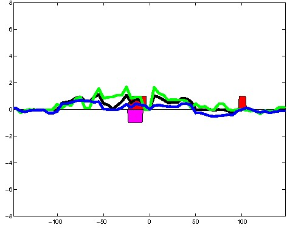
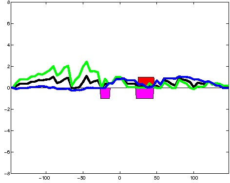
; picked in K562 (state 12:CtcfO, DNase); matched; chr19:51,497,469-51,497,763 (295bp)")
; picked in K562 (state 12:CtcfO, DNase); matched; chr12:110,540,109-110,540,403 (295bp)")
; picked in K562 (state 12:CtcfO, DNase); matched; chr7:88,176,069-88,176,363 (295bp)") 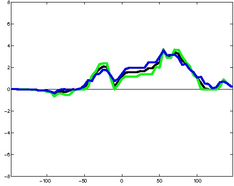
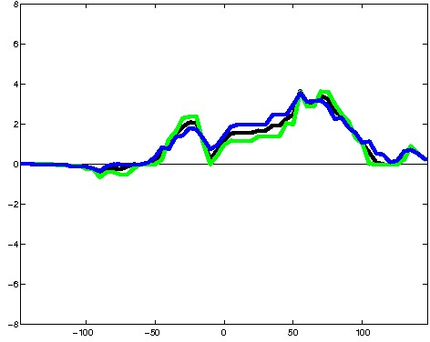
; picked in K562 (state 12:CtcfO, DNase); matched; chr3:97,758,189-97,758,483 (295bp)")
; picked in K562 (state 12:CtcfO, DNase); matched; chr5:30,040,649-30,040,943 (295bp)")
; picked in K562 (state 12:CtcfO, DNase); matched; chrX:11,577,149-11,577,443 (295bp)")
; picked in K562 (state 12:CtcfO, DNase); matched; chr1:120,491,289-120,491,583 (295bp)")
; picked in K562 (state 12:CtcfO, DNase); matched; chr1:160,078,749-160,079,043 (295bp)")
; picked in K562 (state 12:CtcfO, DNase); matched; chr15:58,562,229-58,562,523 (295bp)")
; picked in K562 (state 12:CtcfO, DNase); matched; chr7:129,917,909-129,918,203 (295bp)") 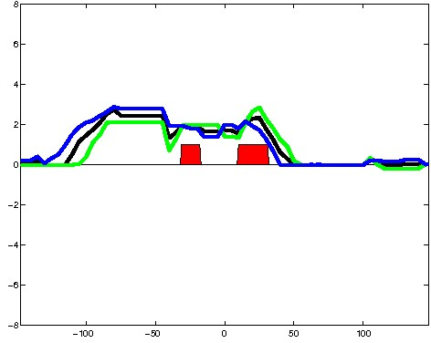
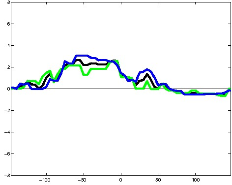
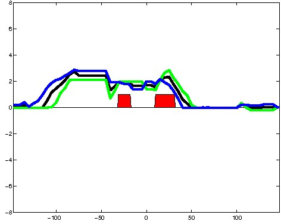
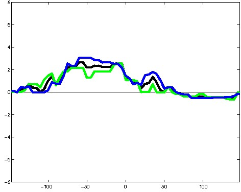
; picked in K562 (state 12:CtcfO, DNase); matched; chr2:7,177,889-7,178,183 (295bp)") 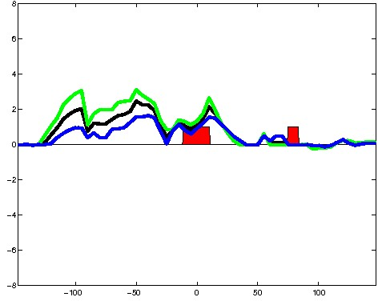
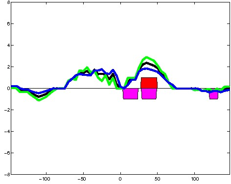
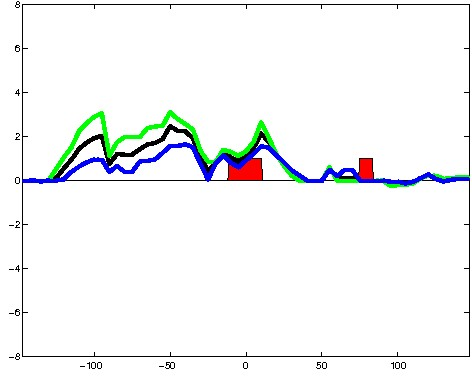
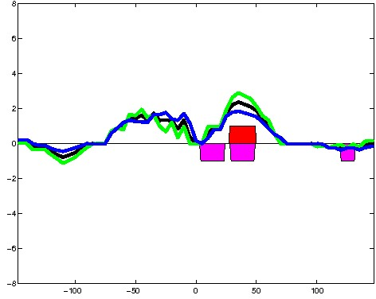
; picked in K562 (state 12:CtcfO, DNase); matched; chr6:137,910,609-137,910,903 (295bp)")
; picked in K562 (state 12:CtcfO, DNase); matched; chr18:45,971,909-45,972,203 (295bp)")
; picked in K562 (state 12:CtcfO, DNase); matched; chr6:41,570,809-41,571,103 (295bp)")
; picked in K562 (state 12:CtcfO, DNase); matched; chr22:27,231,909-27,232,203 (295bp)")
; picked in K562 (state 12:CtcfO, DNase); matched; chrX:12,919,649-12,919,943 (295bp)")
; picked in K562 (state 12:CtcfO, DNase); matched; chr8:104,719,589-104,719,883 (295bp)") 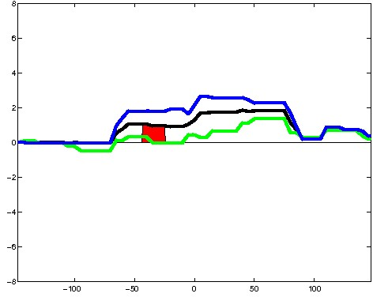
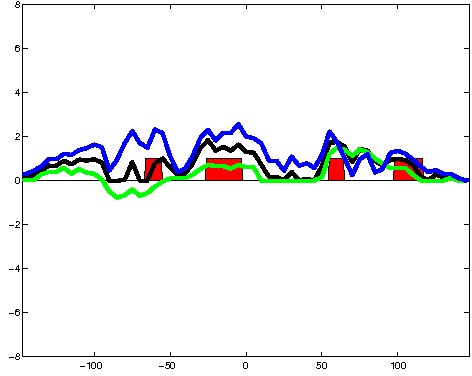
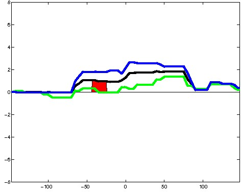
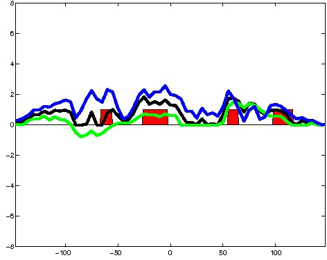
; picked in K562 (state 12:CtcfO, DNase); matched; chr9:19,457,429-19,457,723 (295bp)") 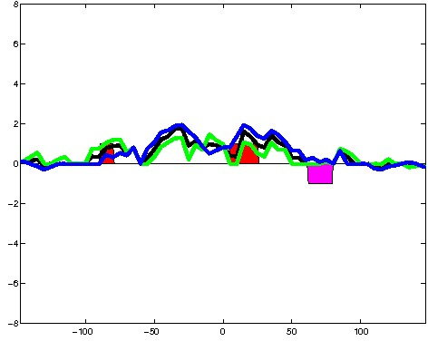
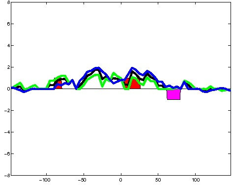
; picked in K562 (state 12:CtcfO, DNase); matched; chr12:3,182,609-3,182,903 (295bp)") 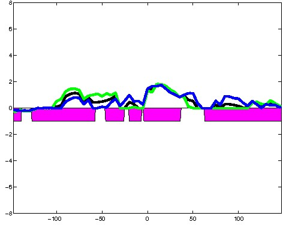
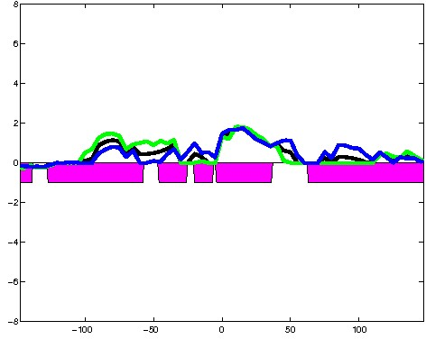
; picked in K562 (state 12:CtcfO, DNase); matched; chr12:57,657,569-57,657,863 (295bp)")
; picked in K562 (state 12:CtcfO, DNase); matched; chr10:124,802,929-124,803,223 (295bp)") 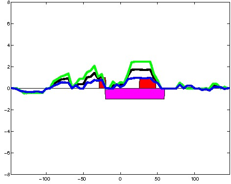
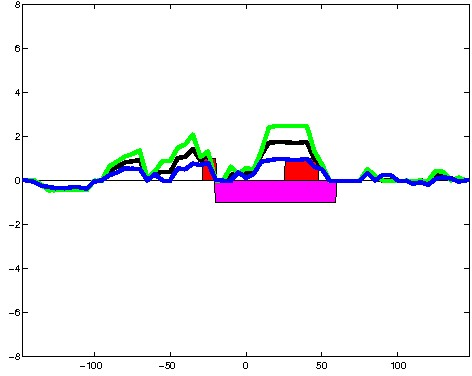
; picked in K562 (state 12:CtcfO, DNase); matched; chr12:54,426,349-54,426,643 (295bp)") 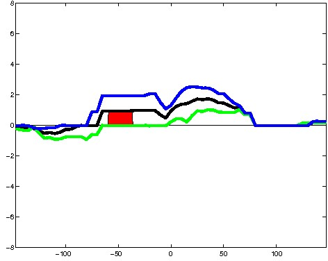
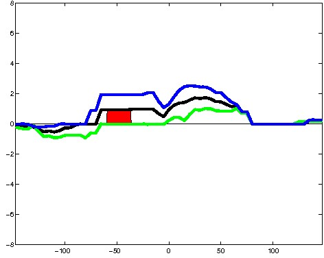
; picked in K562 (state 12:CtcfO, DNase); matched; chr14:71,284,449-71,284,743 (295bp)") 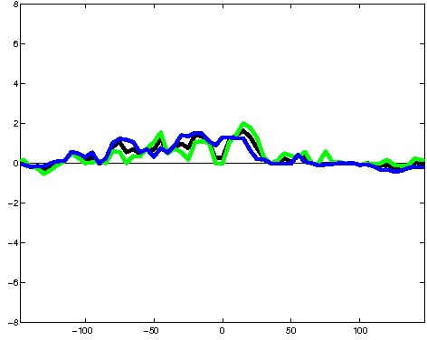
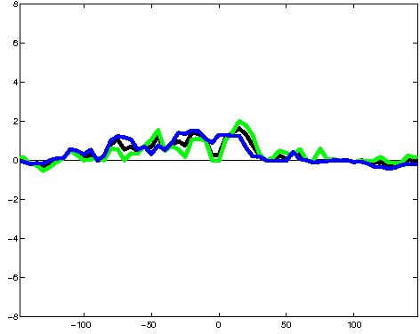
; picked in K562 (state 12:CtcfO, DNase); matched; chr14:77,114,069-77,114,363 (295bp)") 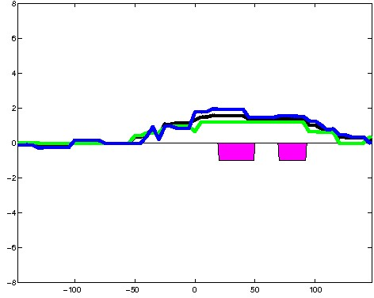
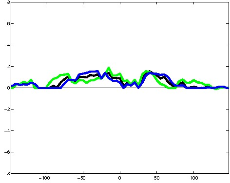
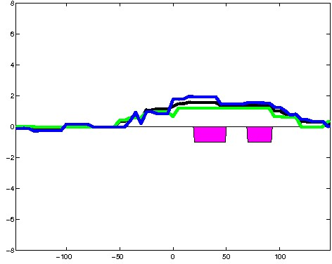
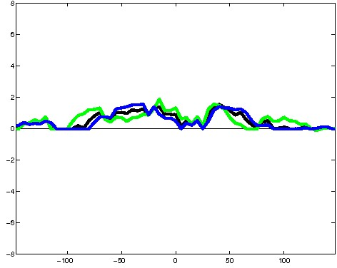
; picked in K562 (state 12:CtcfO, DNase); matched; chr10:86,112,029-86,112,323 (295bp)")
; picked in K562 (state 12:CtcfO, DNase); matched; chr7:135,388,849-135,389,143 (295bp)")
; picked in K562 (state 12:CtcfO, DNase); matched; chr19:5,001,529-5,001,823 (295bp)")
; picked in K562 (state 12:CtcfO, DNase); matched; chr2:201,715,309-201,715,603 (295bp)")
; picked in K562 (state 12:CtcfO, DNase); matched; chr17:41,955,949-41,956,243 (295bp)") 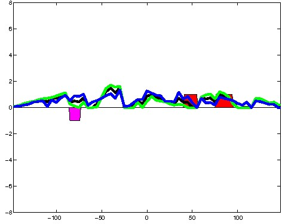
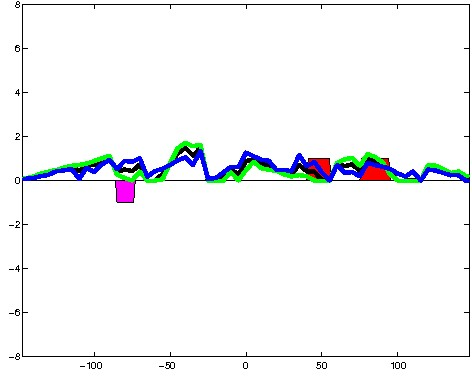
; picked in K562 (state 12:CtcfO, DNase); matched; chr5:133,437,729-133,438,023 (295bp)")
; picked in K562 (state 12:CtcfO, DNase); matched; chr3:36,742,469-36,742,763 (295bp)")
; picked in K562 (state 12:CtcfO, DNase); matched; chr8:27,283,729-27,284,023 (295bp)")
; picked in K562 (state 12:CtcfO, DNase); matched; chr18:52,901,889-52,902,183 (295bp)")
; picked in K562 (state 12:CtcfO, DNase); matched; chr1:53,910,269-53,910,563 (295bp)")
; picked in K562 (state 12:CtcfO, DNase); matched; chrX:130,902,269-130,902,563 (295bp)")
; picked in K562 (state 12:CtcfO, DNase); matched; chr22:47,847,969-47,848,263 (295bp)")
; picked in K562 (state 12:CtcfO, DNase); matched; chr5:106,907,749-106,908,043 (295bp)")
; picked in K562 (state 12:CtcfO, DNase); matched; chrX:27,417,009-27,417,303 (295bp)") 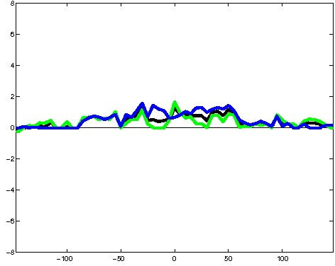
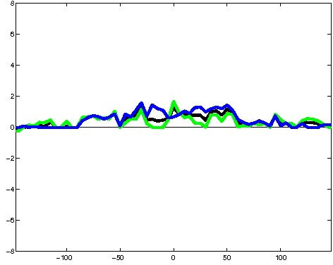
; picked in K562 (state 12:CtcfO, DNase); matched; chr19:46,768,569-46,768,863 (295bp)")
; picked in K562 (state 12:CtcfO, DNase); matched; chr3:149,198,189-149,198,483 (295bp)")
; picked in K562 (state 12:CtcfO, DNase); matched; chr7:130,560,069-130,560,363 (295bp)")
; picked in K562 (state 12:CtcfO, DNase); matched; chr11:120,804,829-120,805,123 (295bp)")
; picked in K562 (state 12:CtcfO, DNase); matched; chr7:142,340,069-142,340,363 (295bp)") 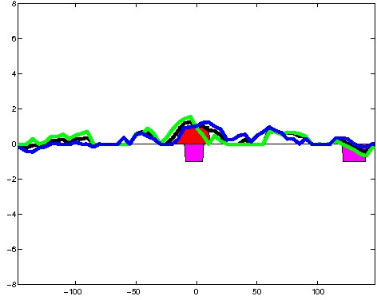
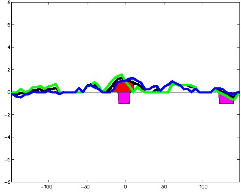
; picked in K562 (state 12:CtcfO, DNase); matched; chr20:61,478,889-61,479,183 (295bp)") 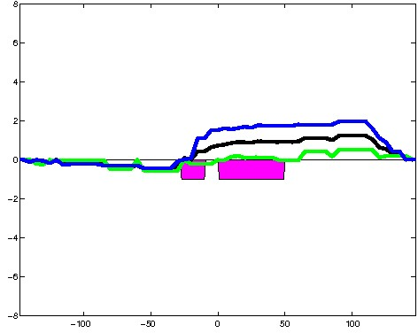
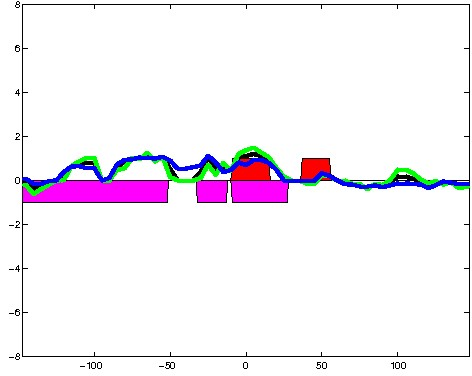
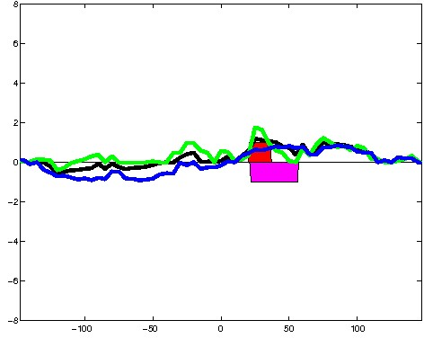
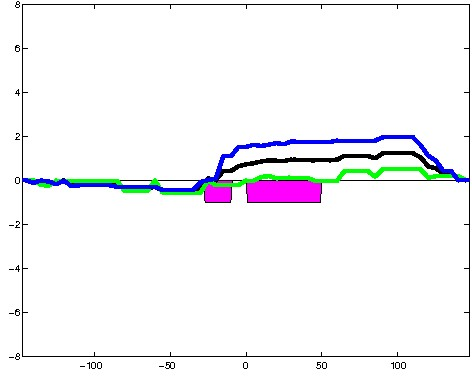
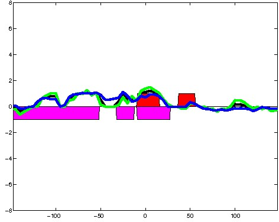
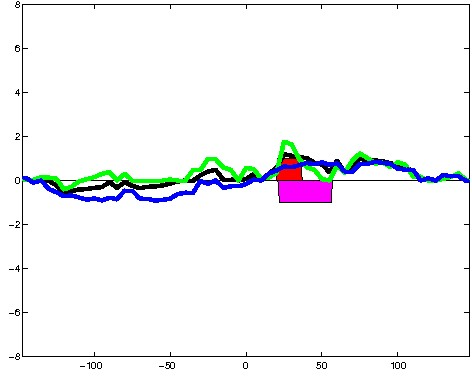
; picked in K562 (state 12:CtcfO, DNase); matched; chr15:67,749,289-67,749,583 (295bp)") 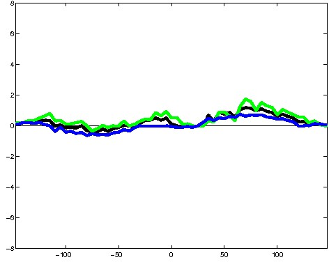
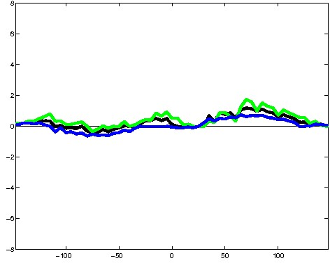
; picked in K562 (state 12:CtcfO, DNase); matched; chr9:128,124,129-128,124,423 (295bp)") 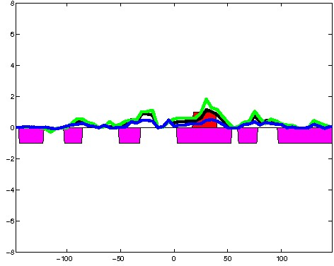
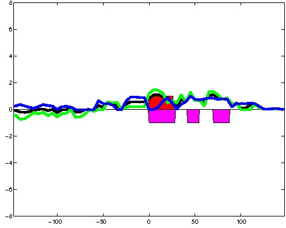
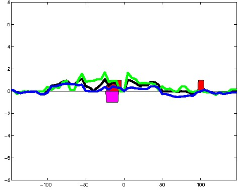
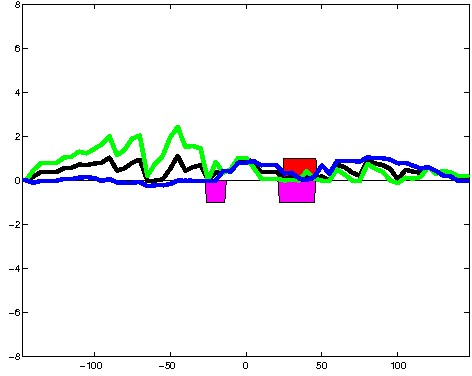
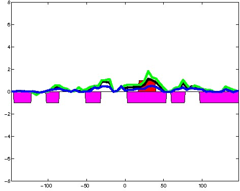
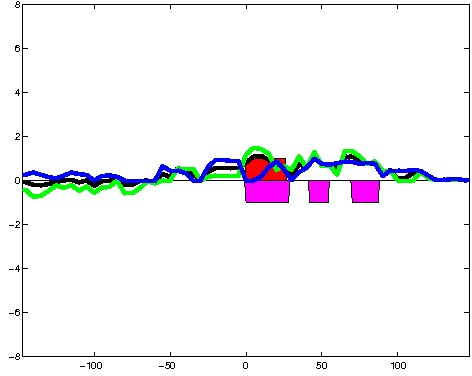
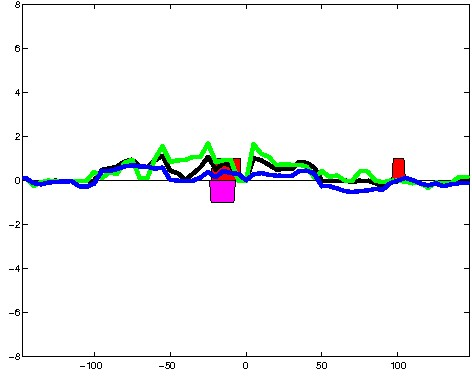
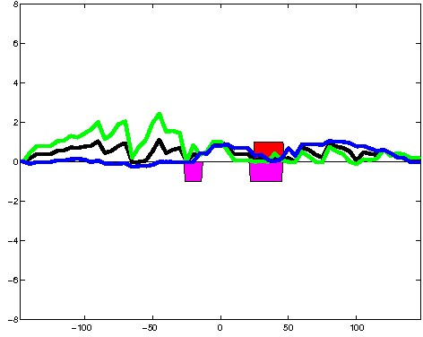
; picked in K562 (state 12:CtcfO, DNase); matched; chr5:64,333,689-64,333,983 (295bp)")
; picked in K562 (state 12:CtcfO, DNase); matched; chr14:58,539,329-58,539,623 (295bp)")
; picked in K562 (state 12:CtcfO, DNase); matched; chr11:60,101,509-60,101,803 (295bp)")
; picked in K562 (state 12:CtcfO, DNase); matched; chr1:120,092,309-120,092,603 (295bp)")
; picked in K562 (state 12:CtcfO, DNase); matched; chr4:73,371,069-73,371,363 (295bp)")
; picked in K562 (state 12:CtcfO, DNase); matched; chr1:95,774,569-95,774,863 (295bp)")